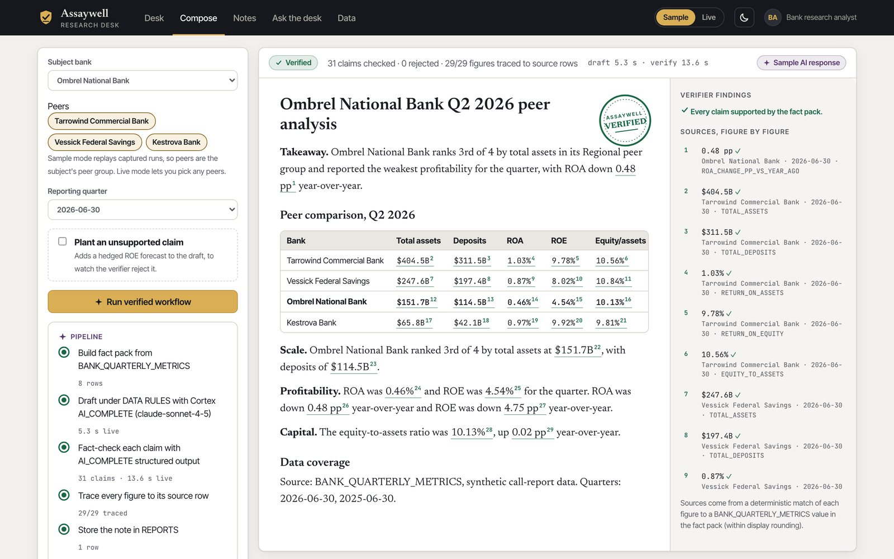
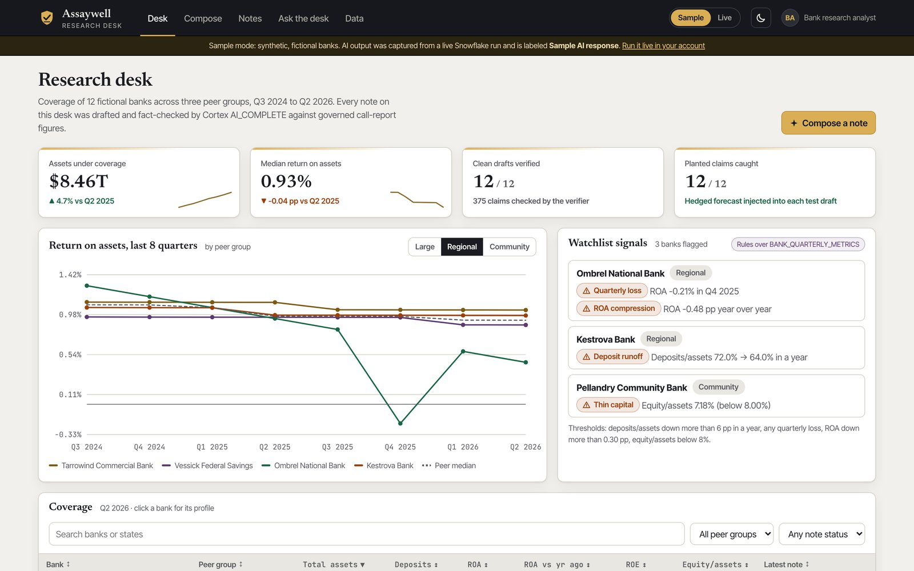
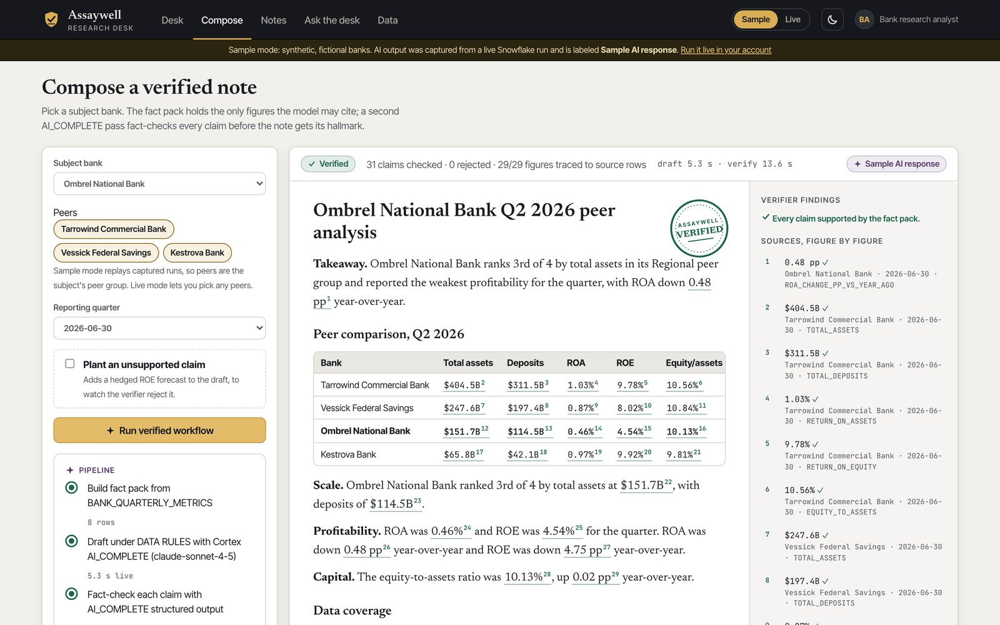
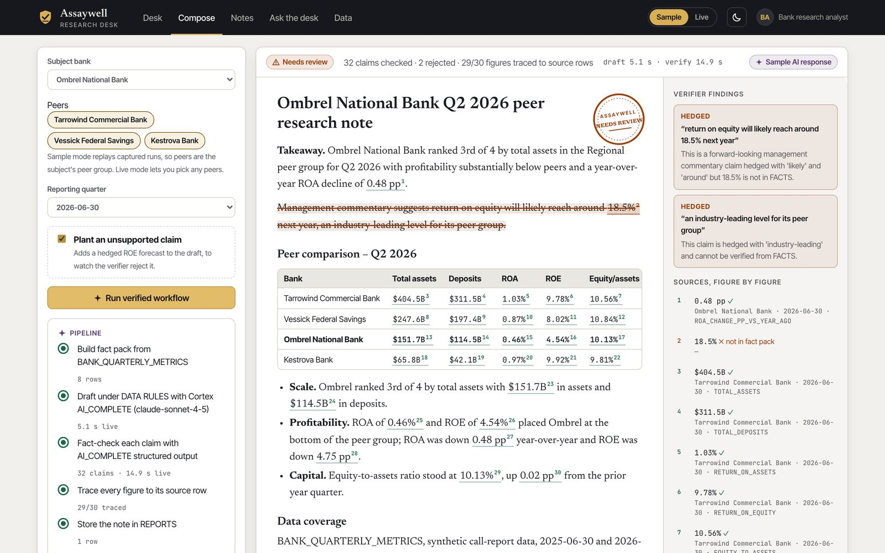
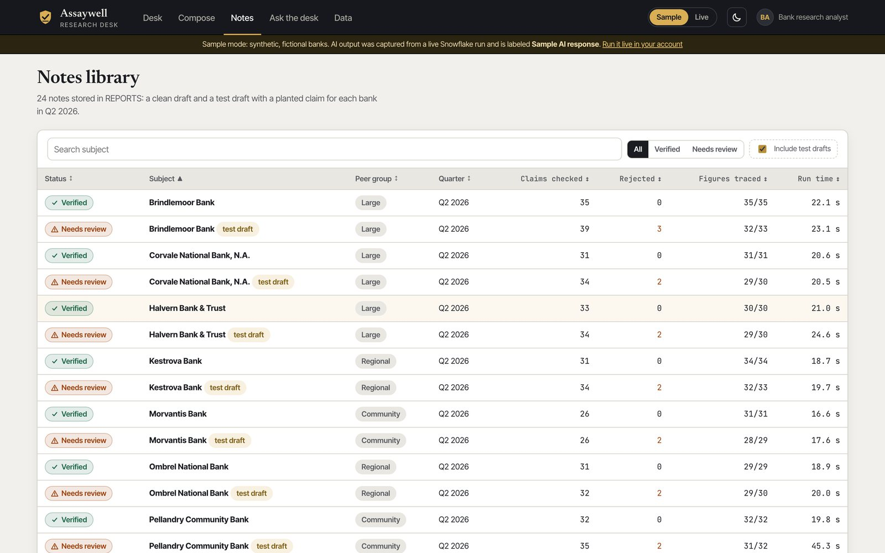
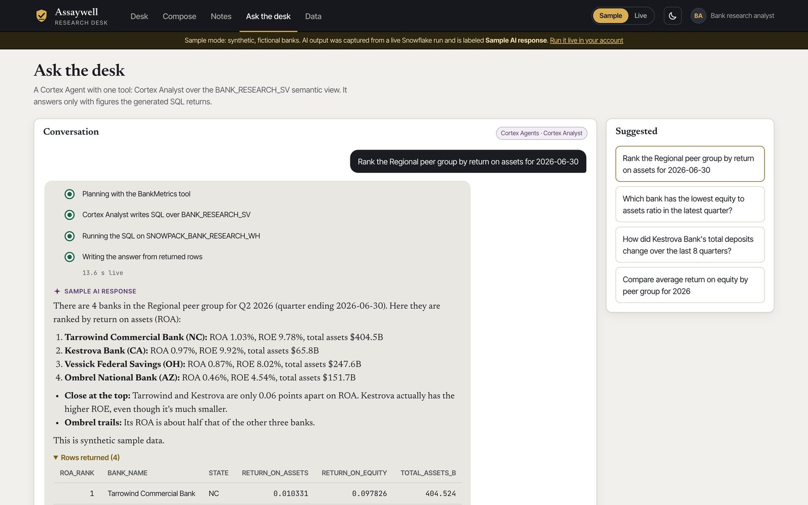
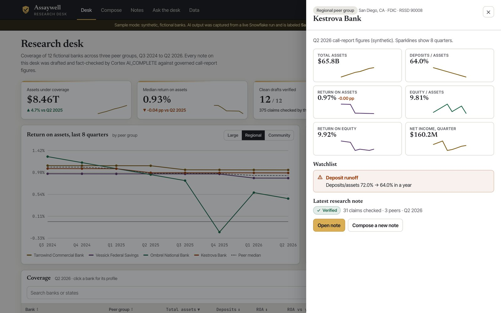

Snow Pack · Banking · Research
An AI research note is only useful if every number in it can be checked.
A bank research desk wants AI drafts of peer notes on scale, profitability and capital, but it can't publish a figure nobody can source. In this pack Cortex AI writes the note using only a governed fact pack from call-report data. A second Cortex call then checks every claim, and each figure is traced to its source row. Only a note that passes gets the hallmark.
- About 20 s per verified note in Live mode (two AI_COMPLETE calls)
- About 15 s setup, one worksheet, XSMALL warehouse
- Synthetic data: 12 fictional banks, 8 quarters, seeded generator

BANK_QUARTERLY_METRICS in the margin. Drafted and checked by Cortex AI_COMPLETE.How a note earns its hallmark
- 01
Fact pack
SQL over
Snowflake SQLBANK_QUARTERLY_METRICSselects the subject and peers for the quarter and a year earlier. It precomputes display strings, year-over-year changes and size ranks, so the model has nothing to calculate. - 02
Grounded draft
The model writes the note under DATA RULES: copy figures verbatim, no estimates, no hedging, no real company names.
Cortex AI_COMPLETE - 03
Verifier
A second call returns a checked claim list as structured output: claim, reason and verdict. One unsupported or hedged claim marks the note Needs review.
AI_COMPLETE structured output - 04
Trace and store
A deterministic matcher ties every $ and % figure to its source row. The note, fact pack and findings are stored in
Snowflake tableREPORTS. - 05
Ask the desk
A Cortex Agent answers follow-up questions with SQL that Cortex Analyst writes over a semantic view.
Cortex Agents · Cortex Analyst · Semantic Views
What you get

WATCHLIST_SIGNALS view (Snowflake SQL).


REPORTS table, with sort, status filter and test-draft toggle.

Run it in your account
- Run
app/setup_synthetic.sqlin one worksheet. Part 1 needs ACCOUNTADMIN; the rest runs as the least-privilege roleSNOWPACK_BANK_RESEARCH_ROLE. - Deploy
app/streamlit_app.pyas Streamlit in Snowflake, or run it locally with key-pair auth. - Switch the header to Live and compose a note.
- When you're done, run
app/teardown.sql.
Real US call-report data: mount the free Financial Data Package listing from Snowflake Marketplace and run app/setup.sql instead.
Requirements and cost
- A Snowflake account in a region with Cortex AI, Cortex Analyst and Cortex Agents, and the
claude-sonnet-4-5model (or changeMODEL). - Setup took about 15 s on XSMALL, well under 0.1 warehouse credits.
- Each note makes two AI_COMPLETE calls (about 6 s to draft, 11 to 17 s to verify, measured). Agent questions took 13 to 27 s.
- Cortex AI token charges apply per note and per question; check your account's pricing.
Docs: AI_COMPLETE · Structured outputs · Cortex Agents · Cortex Analyst · Semantic views · Streamlit in Snowflake
Disclaimer. Synthetic data and fictional banks only; any resemblance to a real institution is unintended. The logic is illustrative and isn't investment, credit or regulatory advice. Verification results ("Verified", claims caught) hold on this synthetic data set only. This is an example provided as-is, not an official Snowflake product, and not supported by Snowflake Support.